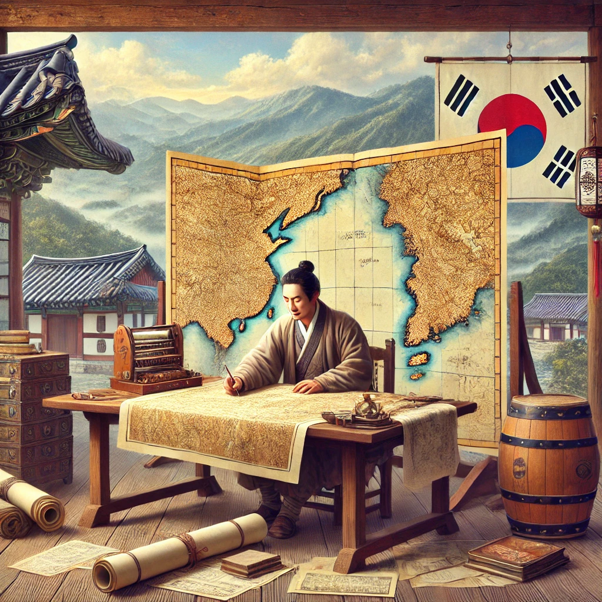

작가
박범신
출판일
2009년 6월 12일
감상평에 대한 AI그림
조선의 지도 제작자 김정호의 삶을 바탕으로, 그의 신념과 헌신을 그려낸 소설입니다.
당시의 정치적 억압과 기술적 한계를 극복하려는 김정호의 노력은 감동적으로 다가옵니다.
단순한 역사적 사실을 나열하는 것이 아니라,
작가의 상상력과 문학적 서사를 통해 한 인물의 집념과 시대적 배경을 풍부하게 풀어냈습니다.

감상평에 대한 AI평가
✨ 김정호의 대동여지도 완성 과정을 역사적 사실과 작가의 상상력으로 재구성한 작품입니다.
✨ 이 책은 김정호라는 역사적 인물의 삶과 그가 살던 시대적 배경을 섬세하게 묘사하여, 독자로 하여금 그 시대를 생생하게 느끼게 합니다.
✨ 특히 하얼빈과 비슷한 점이 많아, 역사 소설을 좋아하는 독자에게 큰 흥미를 줄 것입니다.
✨ 김정호의 집념과 열정을 통해 인간의 끈기와 도전을 다시 한 번 생각하게 만드는 책입니다.